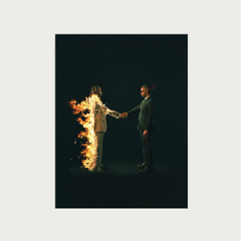

in•ter a•li•a is the fourth studio album by At the Drive-In, released on May 5, 2017. It is their first
studio
album in 17 years since Relationship of Command, and their first release since the 2005 compilation album This
Station Is Non-Operational. It is also the first studio release by the band since El Gran Orgo to not feature
founding member Jim Ward, who chose not to participate in the band's second reunion; as well as the first
studio
album by the band to feature former Sparta guitarist Keeley Davis.

The Off-Season is the sixth studio album[3] by American rapper J. Cole. It was released on May 14, 2021, by
Dreamville Records, Roc Nation and Interscope Records. The album was executive produced by Cole, Ibrahim
Hamad,
and T-Minus. It also features guest vocals from Morray, 21 Savage, Lil Baby, Bas, and 6lack. It became Cole's
first album since 2013's Born Sinner to contain guest features. Production was handled by multiple producers,
including Cole himself, T-Minus, Timbaland, Boi-1da, Frank Dukes, DJ Dahi, Tae Beast, and Jake One, among
others.[4]

Utopia is the fourth studio album by American rapper Travis Scott. It was released through Cactus Jack and
Epic
Records on July 28, 2023. The album features guest appearances from Teezo Touchdown, Drake, Playboi Carti,
Beyoncé, Rob49, 21 Savage, the Weeknd, Swae Lee, Yung Lean, Dave Chappelle, Young Thug, Westside Gunn, Kid
Cudi,
Bad Bunny, SZA, Future, and James Blake, with Lil Uzi Vert and Sheck Wes appearing additionally on physical
releases of the album. Production was handled by a variety of record producers, including Scott and Blake
themselves, WondaGurl, Ye, Allen Ritter, Guy-Manuel de Homem-Christo, Wheezy, Buddy Ross, Vegyn, 30 Roc,
Jahaan

Heroes & Villains is the second studio album by American record producer Metro Boomin. It was released
through
Republic Records and Boominati on December 2, 2022. The album contains guest appearances from John Legend,
Future, Chris Brown, Don Toliver, Travis Scott, 21 Savage, Young Nudy, Young Thug, the Weeknd, Mustafa, ASAP
Rocky, the late Takeoff, and Gunna. Production was mainly handled by Metro himself, alongside TM88, DJ Moon,
Peter Lee Johnson, Johan Lenox, Allen Ritter, David x Eli, Honorable C.N.O.T.E., Scriptplugg

Ye (/jeɪ/ YAY; stylized in all lowercase) is the eighth studio album by the American rapper Kanye West. It
was
released on June 1, 2018, through GOOD Music and distributed by Def Jam Recordings. Following controversy
surrounding an interview with TMZ, West re-recorded all the work on the album, with him completing it over the
course of just two weeks at West Lake Ranch in Jackson Hole, Wyoming. Guest vocals from PartyNextDoor, Ty
Dolla
Sign, Kid Cudi, Charlie Wilson, Jeremih, and 070 Shake, among others, are included.